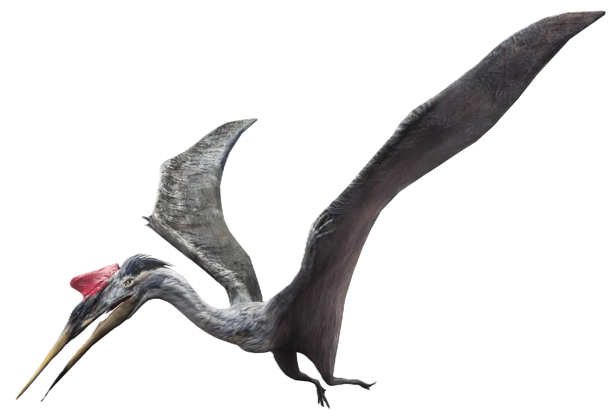

Quetzalcoatlus
Serpiente emplumada
Pterosaurio/Azhdarchidae
Pterosaurio carnívoro ubicado en Texas, Estados Unidos.
El Quetzalcoatlus fue catalogado en el año 1975 y vivió hace 68 millones de años. Su nombre alude a Quetzalcóatl, la serpiente emplumada de la mitología azteca. No fue un dinosaurio sino un reptil volador, y es uno de los animales voladores más grandes que existieron, con una envergadura de entre 10 y 11 metros. Se cree que cazaba presas pequeñas caminando sobre sus cuatro extremidades.
Altura: 5m
longitud: 11m (envergadura)
Peso: 250Kg
velocidad: 130Km/h
periodo: Cretácico superior
Especímenes: Varios
